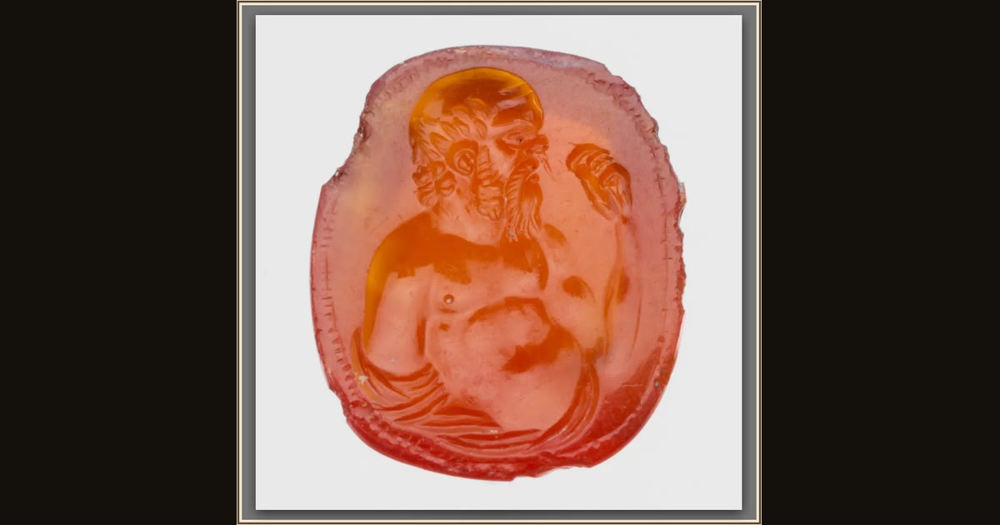

Carnelian engraved gem with a portrait of Sokrates
Roman · ca. 1st century BCE–1st century CE · met
An engraved Roman gem depicts a bearded Socrates; at the opening of his defence, he addresses the men of Athens and answers his accusers. (17a) Explore its place in Plato's Dialogues, Apology, section 1.